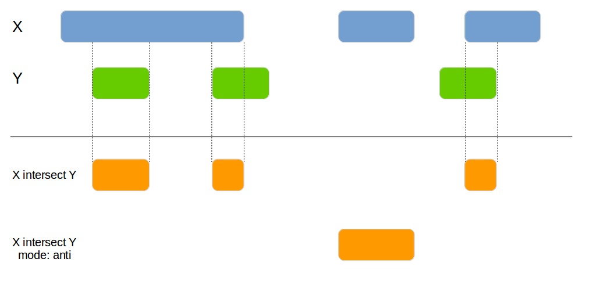
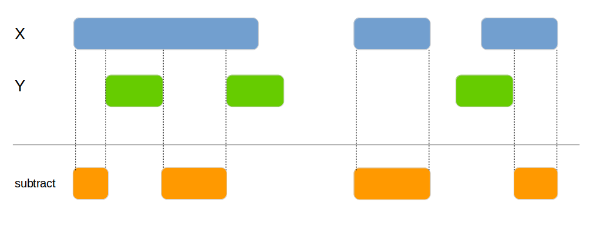
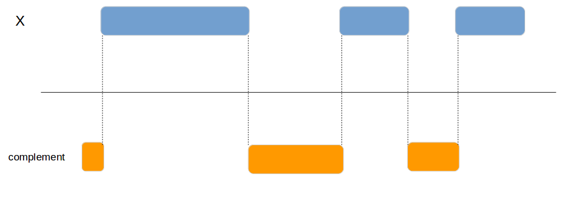
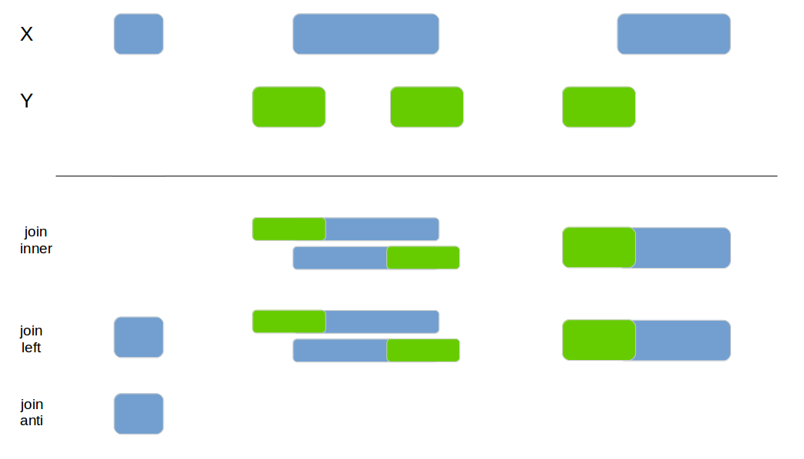

The most dramatic impact on programming in R the last years was the development of the tidyverse by Hadley Wickham et al. which, combined with the ingenious %>% from magrittr, provides a uniform philosophy for handling data.
The genomics community has an alternative set of approaches, for which bioconductor and the GenomicRanges package provide the basis. The GenomicRanges and the underlying IRanges package provide a great set of methods for dealing with intervals as they typically encountered in genomics.
Unfortunately it is not always easy to combine those two worlds, many common operations in GenomicRanges focus solely on the ranges and loose the additional metadata columns. On the other hand the tidyverse does not provide a unified set of methods to do common set operations with intervals.
At least until recently, when the fuzzyjoin package was extended with the genome_join method for combining genomic data stored in a data.frame. It demonstrated that genomic data could appropriately be handled with the tidy-philosophy.
The tidygenomics package extends the limited set of methods provided by the fuzzyjoin package for dealing with genomic data. Its API is inspired by the very popular bedtools:
genome_intersectgenome_subtractgenome_join_closestgenome_clustergenome_complement-
genome_joinProvided by the fuzzyjoin package
genome_intersect
Joins 2 data frames based on their genomic overlap. Unlike the genome_join function it updates the boundaries to reflect the overlap of the regions.

x1 <- data.frame(id = 1:4,
chromosome = c("chr1", "chr1", "chr2", "chr2"),
start = c(100, 200, 300, 400),
end = c(150, 250, 350, 450))
x2 <- data.frame(id = 1:4,
chromosome = c("chr1", "chr2", "chr2", "chr1"),
start = c(140, 210, 400, 300),
end = c(160, 240, 415, 320))
genome_intersect(x1, x2, by=c("chromosome", "start", "end"), mode="both")## id.x chromosome id.y start end
## 1 1 chr1 1 140 150
## 2 4 chr2 3 400 415genome_subtract
Subtracts one data frame from the other. This can be used to split the x data frame into smaller areas.

x1 <- data.frame(id = 1:4,
chromosome = c("chr1", "chr1", "chr2", "chr1"),
start = c(100, 200, 300, 400),
end = c(150, 250, 350, 450))
x2 <- data.frame(id = 1:4,
chromosome = c("chr1", "chr2", "chr1", "chr1"),
start = c(120, 210, 300, 400),
end = c(125, 240, 320, 415))
genome_subtract(x1, x2, by=c("chromosome", "start", "end"))## id chromosome start end
## 1 1 chr1 100 119
## 2 1 chr1 126 150
## 3 2 chr1 200 250
## 4 3 chr2 300 350
## 5 4 chr1 416 450genome_join_closest
Joins 2 data frames based on their genomic location. If no exact overlap is found the next closest interval is used.

x1 <- tibble(id = 1:4,
chr = c("chr1", "chr1", "chr2", "chr3"),
start = c(100, 200, 300, 400),
end = c(150, 250, 350, 450))
x2 <- tibble(id = 1:4,
chr = c("chr1", "chr1", "chr1", "chr2"),
start = c(220, 210, 300, 400),
end = c(225, 240, 320, 415))
genome_join_closest(x1, x2, by=c("chr", "start", "end"), distance_column_name="distance", mode="left")## # A tibble: 5 x 9
## id.x chr.x start.x end.x id.y chr.y start.y end.y distance
## <int> <chr> <dbl> <dbl> <int> <chr> <dbl> <dbl> <int>
## 1 1 chr1 100 150 2 chr1 210 240 59
## 2 2 chr1 200 250 1 chr1 220 225 0
## 3 2 chr1 200 250 2 chr1 210 240 0
## 4 3 chr2 300 350 4 chr2 400 415 49
## 5 4 chr3 400 450 NA <NA> NA NA NAgenome_cluster
Add a new column with the cluster if 2 intervals are overlapping or are within the max_distance.

x1 <- data.frame(id = 1:4, bla=letters[1:4],
chromosome = c("chr1", "chr1", "chr2", "chr1"),
start = c(100, 120, 300, 260),
end = c(150, 250, 350, 450))
genome_cluster(x1, by=c("chromosome", "start", "end"))## # A tibble: 4 x 6
## id bla chromosome start end cluster_id
## <int> <fct> <fct> <dbl> <dbl> <dbl>
## 1 1 a chr1 100 150 0
## 2 2 b chr1 120 250 0
## 3 3 c chr2 300 350 2
## 4 4 d chr1 260 450 1## # A tibble: 4 x 6
## id bla chromosome start end cluster_id
## <int> <fct> <fct> <dbl> <dbl> <dbl>
## 1 1 a chr1 100 150 0
## 2 2 b chr1 120 250 0
## 3 3 c chr2 300 350 1
## 4 4 d chr1 260 450 0genome_complement
Calculates the complement of a genomic region.

x1 <- data.frame(id = 1:4,
chromosome = c("chr1", "chr1", "chr2", "chr1"),
start = c(100, 200, 300, 400),
end = c(150, 250, 350, 450))
genome_complement(x1, by=c("chromosome", "start", "end"))## # A tibble: 4 x 3
## chromosome start end
## <fct> <int> <int>
## 1 chr1 1 99
## 2 chr1 151 199
## 3 chr1 251 399
## 4 chr2 1 299genome_join
Classical join function based on the overlap of the interval. Implemented and mainted in the fuzzyjoin package and documented here only for completeness.

x1 <- tibble(id = 1:4,
chr = c("chr1", "chr1", "chr2", "chr3"),
start = c(100, 200, 300, 400),
end = c(150, 250, 350, 450))
x2 <- tibble(id = 1:4,
chr = c("chr1", "chr1", "chr1", "chr2"),
start = c(220, 210, 300, 400),
end = c(225, 240, 320, 415))
fuzzyjoin::genome_join(x1, x2, by=c("chr", "start", "end"), mode="inner")## # A tibble: 2 x 8
## id.x chr.x start.x end.x id.y chr.y start.y end.y
## <int> <chr> <dbl> <dbl> <int> <chr> <dbl> <dbl>
## 1 2 chr1 200 250 1 chr1 220 225
## 2 2 chr1 200 250 2 chr1 210 240## # A tibble: 5 x 8
## id.x chr.x start.x end.x id.y chr.y start.y end.y
## <int> <chr> <dbl> <dbl> <int> <chr> <dbl> <dbl>
## 1 1 chr1 100 150 NA <NA> NA NA
## 2 2 chr1 200 250 1 chr1 220 225
## 3 2 chr1 200 250 2 chr1 210 240
## 4 3 chr2 300 350 NA <NA> NA NA
## 5 4 chr3 400 450 NA <NA> NA NA## # A tibble: 3 x 4
## id chr start end
## <int> <chr> <dbl> <dbl>
## 1 1 chr1 100 150
## 2 3 chr2 300 350
## 3 4 chr3 400 450